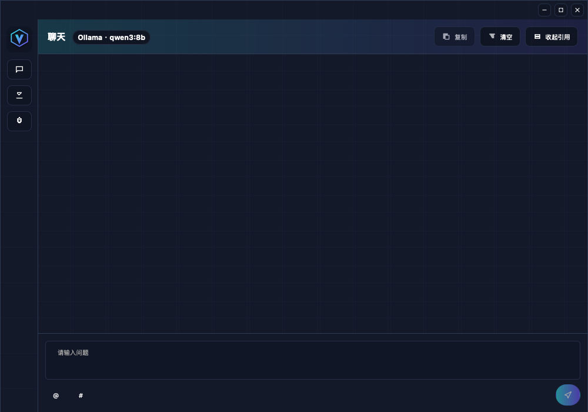
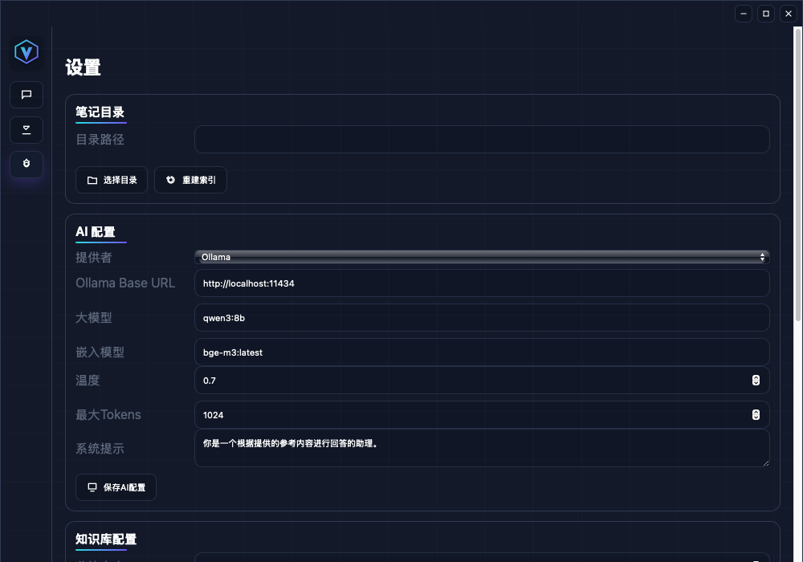

Features
-
Capsule chat input with streaming answers and model badge
-
Safe Markdown preview and code highlighting
-
Resizable notes sidebar and view modes (Preview / Editor / Both)
-
Vector search with keyword fallback
Screenshots


Install
npm install npm run dev
Downloads